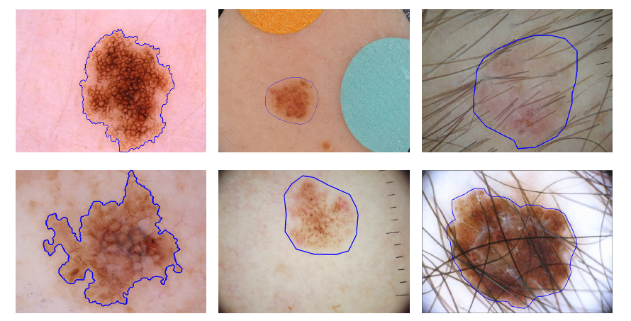
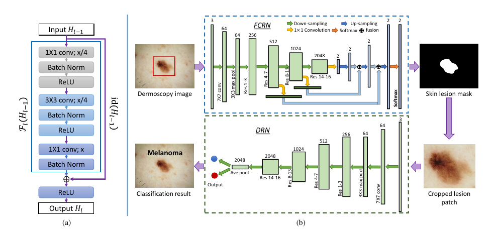
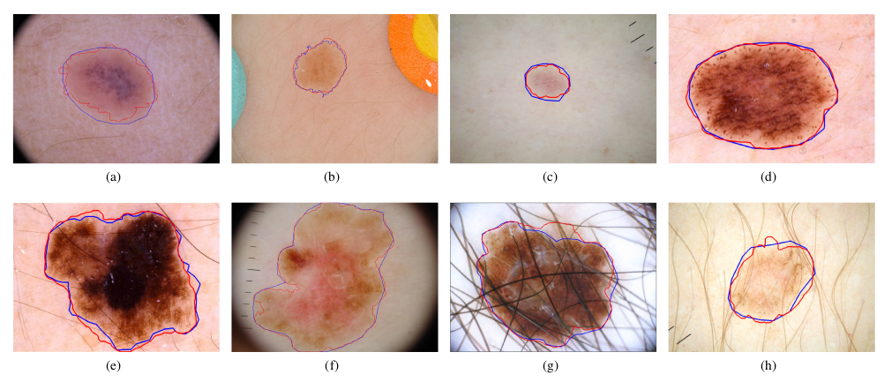
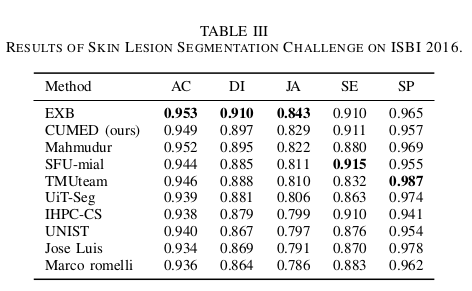
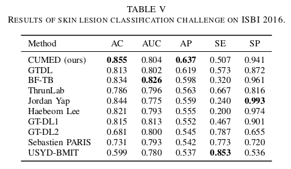
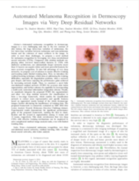

Lequan Yu1 Hao Chen1 Qi Dou1 Jing Qin2 Pheng Ann Heng1
1The Chinese Univeristy of Hong Kong 2The Hong Kong Polytechnic University
|  |
Automated melanoma recognition from dermoscopy images is a very challenging task. The main challenges include (from left to right): high degree of visual similarity between melanoma and non-melanoma lesions, relatively low contrast between skin lesions and normal skin regions, and artifacts in images. The top column images show non-melanomas and bottom column images show melanomas. Blue contours indicate the skin lesions. |
Abstract
Automated melanoma recognition in dermoscopy images is a very challenging task due to the low contrast of skin lesions, the huge intra-class variation of melanomas, the high degree of visual similarity between melanoma and non-melanoma lesions, and the existence of many artifacts in the image. In order to meet these challenges, we propose a novel method for melanoma recognition by leveraging very deep convolutional neural networks (CNNs). Compared with existing methods employing either low-level hand-crafted features or CNNs with shallower architectures, our substantially deeper networks (more than 50 layers) can acquire richer and more discriminative features for more accurate recognition. To take full advantage of very deep networks, we propose a set of schemes to ensure effective training and learning under limited training data. First, we apply the residual learning to cope with the degradation and overfitting problems when a network goes deeper. This technique can ensure that our networks benefit from the performance gains achieved by increasing network depth. Then, we construct a fully convolutional residual network (FCRN) for accurate skin lesion segmentation, and further enhance its capability by incorporating a multi-scale contextual information integration scheme. Finally, we seamlessly integrate the proposed FCRN (for segmentation) and other very deep residual networks (for classification) to form a two-stage framework. This framework enables the classification network to extract more representative and specific features based on segmented results instead of the whole dermoscopy images, further alleviating the insufficiency of training data. The proposed framework is extensively evaluated on ISBI 2016 Skin Lesion Analysis Towards Melanoma Detection Challenge dataset. Experimental results demonstrate the significant performance gains of the proposed framework, ranking the first in classification and the second in segmentation among 25 teams and 28 teams, respectively (complete results:classification and segmentation). This study corroborates that very deep CNNs with effective training mechanisms can be employed to solve complicated medical image analysis tasks, even with limited training data.
Method
|  |
The proposed framework contains two main components. First, we construct a very deep fully convolutional residual network, which incorporates multi-scale feature representations, to segment skin lesions. Second, based on the segmentation results, we employ a very deep residual network to precisely distinguish melanomas from non-melanoma lesions.. |
Results
|

Examples of some skin lesion segmentation results from test images. The first and second rows are non-melanoma and melanoma lesions, respectively. The red and blue contours indicate the segmentation results of our method and ground truth, respectively. |
|

There are totally 28 submissions. The top 10 entries are shown here and the ranking (from top to bottom) was made according to the JA. |

There are totally 25 submissions. The top 10 entries are shown here and the ranking was made according to the AP scores. |
Downloads
|  | "Automated Melanoma Recognition in Dermoscopy Images via Very Deep Residual Networks" Lequan Yu, Hao Chen, Qi Dou, Jing Qin, Pheng Ann Heng. |
Last update: Dec., 2016